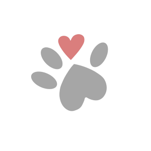
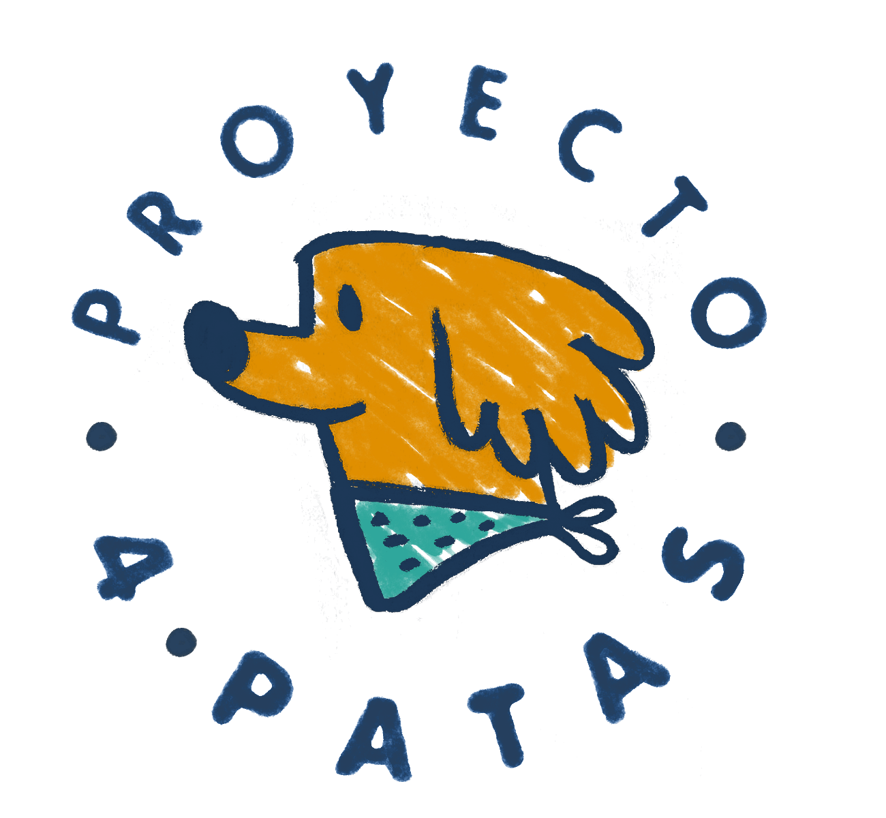
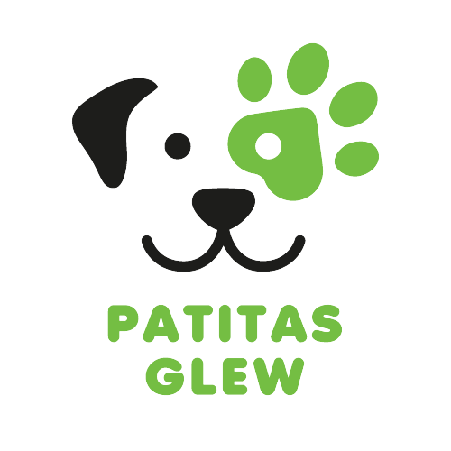

Amigo a Casa
Rescatamos, rehabilitamos y damos en adopción a animales abandonados y maltratados, mientras intentamos generar conciencia.
Ubicación
Proyecto 4 Patas
Proyecto 4 Patas (P4P) es una asociación civil sin fines de lucro abocada a difundir, proteger y promover los derechos de los animales.
Ubicación
Patitas Glew
Patitas Glew es una asociación civil sin fines de lucro abocada a velar por los perros callejeros de la ciudad de Glew. Alimentan y ofrecen atención médica.
Ubicación